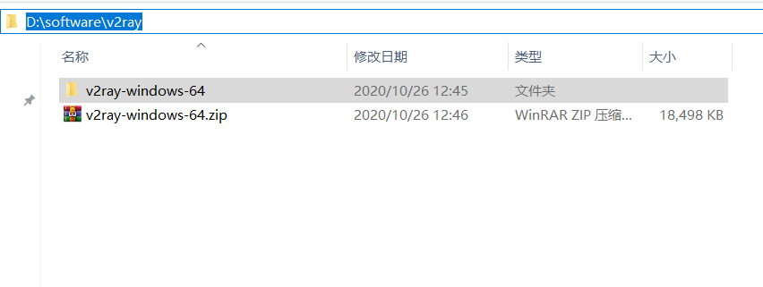
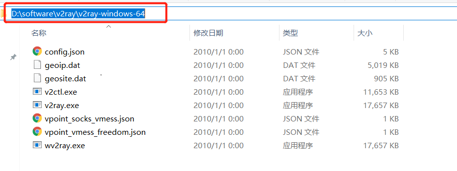
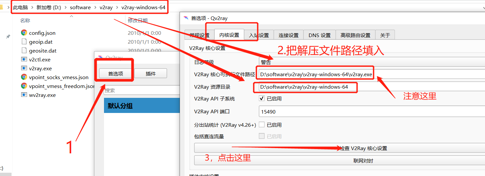
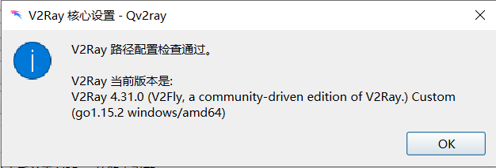
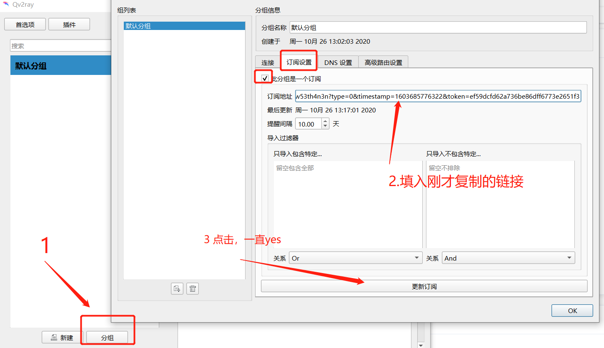
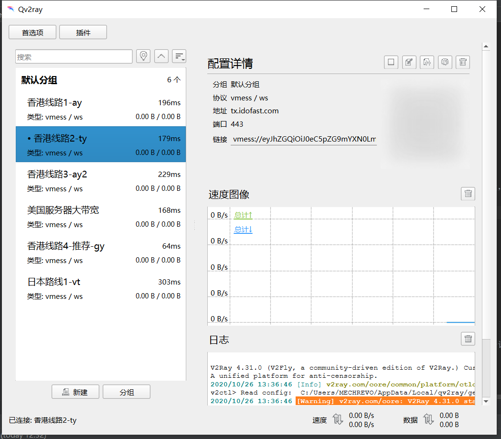
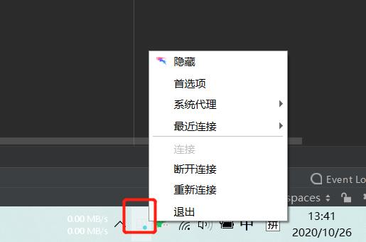

win7使用教程
第一步安装软件
点击此处下载软件安装包下载完直接下一步，下一步安装就行
第二步，再qv2ray中设置v2ray的路径
下载这个压缩包v2ray-windows-64.zip下载后把该文件找到一个合适的目录进行解压，并复制解压后的文件路径
在这里我把它解压到D:\software\v2ray\v2ray-windows-64这个目录里
打开你刚才安装的qv2ray软件，把刚才文件解压的路径填入
第三步点击后如果成功应该会有以下提示
别忘了点击右下角的OK按钮保存设置
第三步，导入你的订阅链接
请登陆自己的账号后台获取，在我的账号这一栏中有个订阅地址，点击复制便可把内容复制到剪切板里(如果没有先点击生成)

然后按下面步骤填入订阅链接
这时主页面默认分组会出现一些服务器（没有的话双击默认分组会展开）
选择一个服务器双击便可开启代理
该软件启动时会在桌面托盘右下角有一个图标，如果想退出，请对图标右键点击退出
